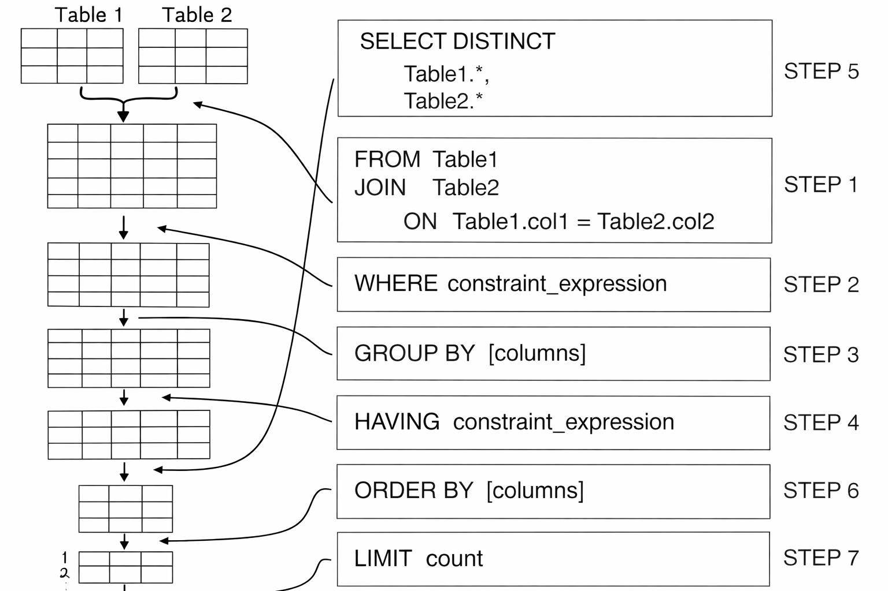

Difficulty: Medium
SQL queries are not executed from top to bottom. Although we write SELECT first, the DBMS processes clauses in a different order.
The engine builds the row set bottom-up: grab the tables (FROM), filter rows (WHERE), bucket them (GROUP BY), filter buckets (HAVING), and only then pick columns (SELECT), sort, and trim. That's why you can't reference a SELECT alias in WHERE — WHERE already ran four steps earlier.
Example Query:
MySQL / PostgreSQL
SELECT level, AVG(score)
AS average_rr
FROM players
WHERE score > 500
GROUP BY level
HAVING AVG(score) > 700
ORDER BY average_rr DESC
LIMIT 1;
| Execution Order | Clause | Purpose |
|---|---|---|
| 1 | FROM | Load table(s) |
| 2 | WHERE | Filter rows |
| 3 | GROUP BY | Create groups |
| 4 | HAVING | Filter groups |
| 5 | SELECT | Choose columns |
| 6 | ORDER BY | Sort results |
| 7 | LIMIT | Restrict output rows |
This execution order explains why aggregate functions cannot be used in a WHERE clause. At the time WHERE executes, groups have not been created yet.
Let us observe how a DBMS executes a query step-by-step.
Current table:
| team | player | kills |
|---|---|---|
| Sentinels | TenZ | 24 |
| Sentinels | Zekken | 19 |
| PRX | something | 27 |
| PRX | f0rsakeN | 17 |
Query:
MySQL / PostgreSQL
SELECT team, AVG(kills)
AS avg_kills
FROM match_stats
WHERE kills > 15
GROUP BY team
HAVING AVG(kills) > 20
ORDER BY avg_kills DESC
LIMIT 1;
DBMS loads the table match_stats.
Apply: kills > 15
| team | player | kills |
|---|---|---|
| Sentinels | TenZ | 24 |
| Sentinels | Zekken | 19 |
| PRX | something | 27 |
| PRX | f0rsakeN | 17 |
Rows are grouped by team.
| Group | Kills |
|---|---|
| Sentinels | 24, 19 |
| PRX | 27, 17 |
Apply: AVG(kills) > 20
| team | average kills |
|---|---|
| Sentinels | 21.5 |
| PRX | 22 |
Both groups satisfy the condition and remain.
Only the requested columns are returned.
| team | avg_kills |
|---|---|
| Sentinels | 21.5 |
| PRX | 22 |
Apply: ORDER BY avg_kills DESC
| team | avg_kills |
|---|---|
| PRX | 22 |
| Sentinels | 21.5 |
Apply: LIMIT 1
| team | avg_kills |
|---|---|
| PRX | 22 |
| team | avg_kills |
|---|---|
| PRX | 22 |
|
 |
SQL is a declarative language, meaning we describe the result we want rather than the exact steps needed to obtain it. Because of this, the database logically processes different parts of a query in an order that may not match the order in which they are written.
However, this does not mean we can write SQL statements in the logical execution order. SQL has a fixed syntax, known as its parsing order, which determines how queries must be written. The database first parses the query according to this structure and then internally evaluates it using its logical execution order.
Placing the two orders next to each other makes the mismatch obvious:
| Clause | Parsing order (how you write it) | Execution order (how it runs) |
|---|---|---|
| SELECT | 1 | 5 |
| FROM | 2 | 1 |
| WHERE | 3 | 2 |
| GROUP BY | 4 | 3 |
| HAVING | 5 | 4 |
| ORDER BY | 6 | 6 |
| LIMIT | 7 | 7 |
Notice SELECT is written first but runs fifth, while FROM is written second but runs
first. Only ORDER BY and LIMIT happen to sit in the same position in both orders —
which is exactly why they read so naturally at the end of a query.
For example, although FROM is logically processed before SELECT, writing a query as
FROM Cars SELECT * would be invalid because SQL expects the SELECT clause to appear
first. Understanding the difference between parsing order and logical execution order helps explain many SQL
behaviors, such as why aliases defined in SELECT are often unavailable in WHERE.
Understanding SQL execution order is essential before learning joins. Joins rely heavily on the FROM phase, where SQL combines rows from multiple tables before applying filters, grouping, and sorting.
Next, Keys. >>
Prev, Aggregates DQL. <<